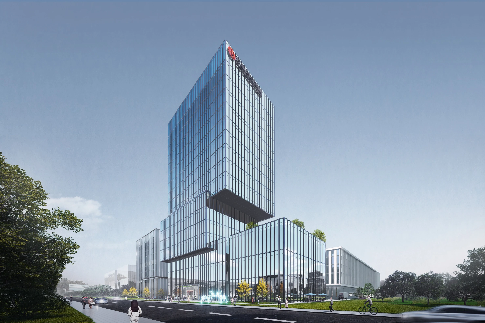

JIUFU SEMICONDUCTOR EQUIPMENT CAMPUS
玖福泛半导体装备研发生产项目
生产组团与研发塔楼
安徽 · 合肥
半导体 · 研发生产 / 2025.03

- 地点
- 安徽 · 合肥
- 年份
- 2025.03
- 类型
- 半导体 · 研发生产
- 阶段
- 专家会方案一
- 参与
- 项目设计参与 · 团队协作
- 设计团队
- 深圳市建筑设计研究总院有限公司合肥分院
PROJECT / 项目
项目位于合肥高新区，以半导体装备研发与生产为空间核心。方案一将规整的生产厂房与研发配套塔楼结合布置，通过体量关系、沿街界面及入口空间，建立清晰的园区形象。
01 / DESIGN组织生产与研发
将不同尺度的厂房、研发与配套建筑统筹布局，协调功能分区和基地到达关系。
02 / DESIGN以体量建立识别
研发塔楼通过分段与错动形成形象节点，与横向展开的生产建筑保持联系。
03 / DESIGN从空间形象到图纸
以厂房平面和研发塔楼剖面，展示不同功能空间的尺度与层次。